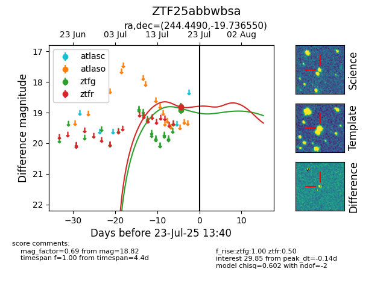

Target ZTF25abbwbsa at 2025-07-23 13:40, see:
FINK: fink-portal.org/ZTF25abbwbsa
Lasair: lasair-ztf.lsst.ac.uk/objects/ZTF25abbwbsa
ALeRCE: alerce.online/object/ZTF25abbwbsa
alt names
ZTF25abbwbsa (ztf,fink)
coordinates:
equatorial (ra, dec) = (244.4490,-19.73655)
galactic (l, b) = (355.3703,+21.49842)
photometry
last ztfg=18.81, ztfr=18.82
2 ztfg, 1 ztfr detections
